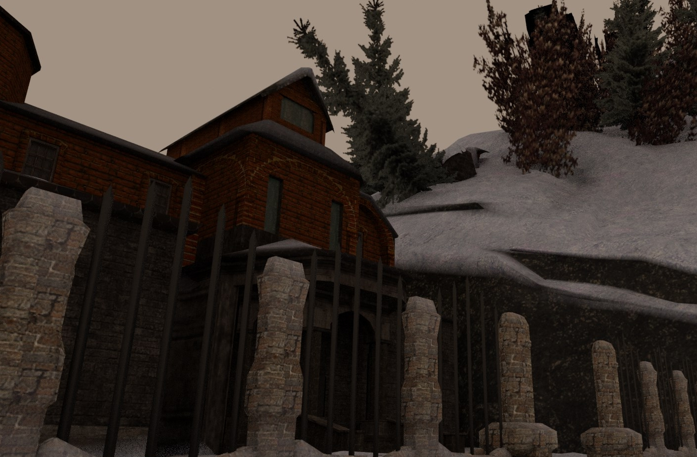
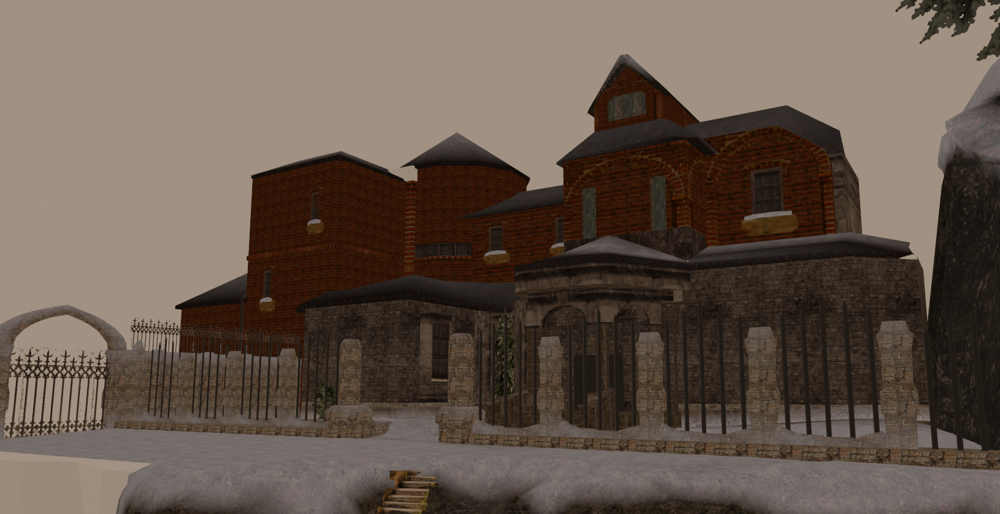
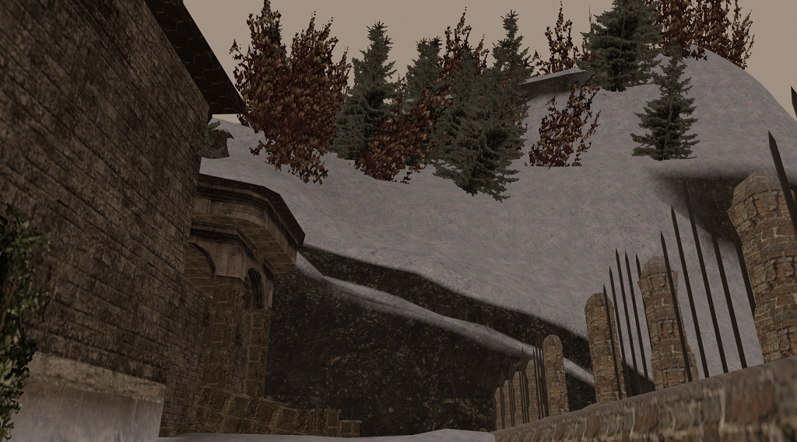

Wizard's Mansion
This project was an experiment in various 3D techniques:
- Tri-planar mapping (smooth transitions between snow and other textures, determined by vertex color).
- Geometry nodes (used to dot the mountains with trees automatically; they were not handplaced).
- Building a level using Blender alone, without using Constructive Solid Geometry.


